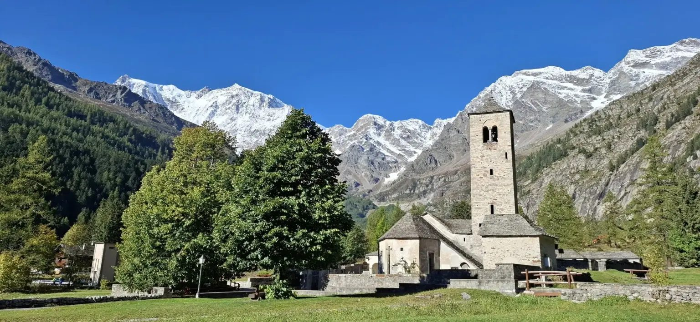
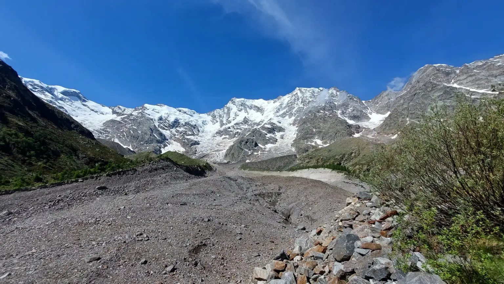
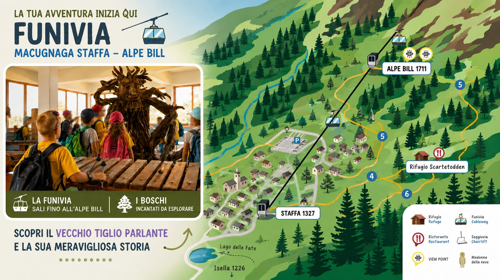

Belvedere et Alpe Burki
Vue sur la face Est, silence et pâturages. À l’Alpe Burki, chalets et refuges avec cuisine alpine : base parfaite pour une demi-journée à basse–moyenne altitude.

Télésiège pour le Belvedere et téléphérique pour Alpe Bill et Passo Moro : des remontées qui rapprochent de la face Est du Monte Rosa. Vérifiez les ouvertures officielles et enrichissez le séjour avec les expériences du portail de réservation.
Deux domaines
À Macugnaga les remontées relient le fond de vallée à deux zones distinctes.
Sur le versant Belvedere, les télésièges depuis Pecetto montent vers Alpe Burki (station intermédiaire, environ 1593 m) et le Belvedere (environ 1914 m) : un balcon naturel sur la « face himalayenne » du Monte Rosa.
Sur le versant Monte Moro, les téléphériques relient Staffa à Alpe Bill et, avec le second tronçon, au Passo Moro (environ 2870 m), l’un des cols panoramiques les plus connus du Val Anzasca.
Source et mises à jour : macugnagamonterosaski.com · destinazione macugnaga-monterosa.it
En altitude
Quand les tronçons sont en service, monter en télésiège ou téléphérique ouvre panoramas, alpages et sentiers sans affronter tout de suite le dénivelé à pied — idéal pour familles, week-ends et qui veut la montagne à pas lents.
Vue sur la face Est, silence et pâturages. À l’Alpe Burki, chalets et refuges avec cuisine alpine : base parfaite pour une demi-journée à basse–moyenne altitude.

Depuis le Belvedere vous pouvez continuer à pied vers le Rifugio Zamboni-Zappa, des itinéraires sur le glacier du Belvedere et le Lago delle Locce — parcours de difficulté variable ; choisissez selon préparation et conditions.

Le téléphérique rapproche d’Alpe Bill et, quand le second tronçon est ouvert, du Passo Moro : vue à 360° sur les Alpes et vers la Suisse, avec la Madonna della Neve près de l’arrivée en altitude.

Été et hiver
En été les remontées — aux périodes d’ouverture publiées par la société — facilitent trekking, VTT et journées panoramiques entre prés, bois et haute altitude.
En hiver Belvedere et Monte Moro sont le cœur du ski et du snowboard à Macugnaga, avec pistes et liaisons décrites sur le plan officiel.
Des remontées ou tronçons peuvent être fermés pour maintenance, météo ou mises à jour techniques : ne vous fiez pas aux rumeurs — vérifiez l’état en direct avant de programmer la journée.
Info pratiche
Selon le site officiel des remontées (mise à jour juillet 2026) : les télésièges Belvedere et le premier tronçon du téléphérique Staffa–Alpe Bill sont en service à partir du 19 juillet 2026 ; le second tronçon Alpe Bill–Passo Moro est indiqué comme fermé pour entretiens extraordinaires. Ces indications peuvent changer : vérifiez toujours horaires, billets et état live avant de partir.
Portale di prenotazione
Les billets de téléphérique et télésiège s’achètent auprès de la société des remontées. Sur le portail de réservation vous trouvez plutôt randonnées, bien-être, Maison-musée Walser et mine d’or — pour compléter la journée ou le week-end à Macugnaga.
FAQ
Télésièges du Belvedere (Pecetto–Burki–Belvedere) et téléphériques du Monte Moro (Staffa–Alpe Bill–Passo Moro).
Panoramas sur le Monte Rosa, halte aux alpages (Burki, Bill), promenades vers refuges et glacier du Belvedere ; au Passo Moro (quand accessible avec le second tronçon) vue à 360° et la Madonna della Neve.
Uniquement depuis le site officiel : macugnagamonterosaski.com/impianti. Horaires et état des tronçons peuvent changer même en saison.
Non. C’est le portail de réservation d’expériences guidées et de visites culturelles. Pour billets et forfaits utilisez les canaux de la société des remontées.
Une montée en altitude (si les remontées sont en service) se marie avec Maison Walser, mine d’or et activités outdoor. Idées sur Week-end et réservations sur Expériences.
Images panoramiques et d’alpage : matériel publié sur macugnagamonterosaski.com (Macugnaga Transportation and Services). Crédits aussi dans Crédits.